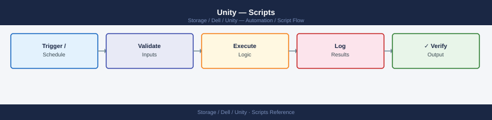

Unity — Scripts¶

Before you begin¶
- Access: Storage admin credentials (cluster admin or equivalent)
- Timing: safe to run during business hours unless a step is marked ⚠ (causes interruption)
- Dependencies: no active upgrades or migrations on the same infrastructure
- Logging: capture command output — paste into the change record on completion
System Health Check¶
Uses uemcli to run a comprehensive health check against a Dell Unity array: component health, pool capacity, LUN status, active alerts, and storage processor state. Exits non-zero if any component is in a non-OK health state.
#!/bin/bash
# unity_health_check.sh — Dell Unity system health check via uemcli
# Usage: UNITY_HOST=unity01.example.com UNITY_USER=admin UNITY_PASS=secret ./unity_health_check.sh
set -euo pipefail
UNITY_HOST="${UNITY_HOST:-}"
UNITY_USER="${UNITY_USER:-admin}"
UNITY_PASS="${UNITY_PASS:-}"
if [[ -z "$UNITY_HOST" || -z "$UNITY_PASS" ]]; then
echo "ERROR: UNITY_HOST and UNITY_PASS must be set." >&2
exit 1
fi
UEMCLI="uemcli -d ${UNITY_HOST} -u ${UNITY_USER} -p ${UNITY_PASS}"
ISSUES=0
section() {
echo ""
echo "========================================"
echo " $1"
echo "========================================"
}
echo ""
echo "########################################"
echo " Dell Unity Health Check"
echo " Host : $UNITY_HOST"
echo " Date : $(date '+%Y-%m-%d %H:%M:%S')"
echo "########################################"
# --- Component health ---
section "COMPONENT HEALTH (non-OK only)"
HEALTH_OUT=$($UEMCLI /env/health show -filter "health.value ne OK" 2>&1 || true)
if echo "$HEALTH_OUT" | grep -qi "No entries"; then
echo " All components healthy."
else
echo "$HEALTH_OUT"
# Count degraded components
DEGRADED=$(echo "$HEALTH_OUT" | grep -c "health.value" || true)
ISSUES=$((ISSUES + DEGRADED))
fi
# --- Storage pool capacity ---
section "STORAGE POOL CAPACITY"
$UEMCLI /stor/pool show -detail 2>&1 || { echo " ERROR: could not query pools."; ISSUES=$((ISSUES + 1)); }
# --- LUN overview ---
section "LUN OVERVIEW"
$UEMCLI /store/lun show 2>&1 || { echo " ERROR: could not query LUNs."; ISSUES=$((ISSUES + 1)); }
# --- Active alerts ---
section "ACTIVE ALERTS"
ALERT_OUT=$($UEMCLI /sys/alert show 2>&1 || true)
echo "$ALERT_OUT"
ALERT_COUNT=$(echo "$ALERT_OUT" | grep -c "^[[:space:]]*[0-9]" || true)
if [[ "$ALERT_COUNT" -gt 0 ]]; then
ISSUES=$((ISSUES + 1))
fi
# --- Storage processor status ---
section "STORAGE PROCESSOR STATUS"
$UEMCLI /env/sp show 2>&1 || { echo " ERROR: could not query SPs."; ISSUES=$((ISSUES + 1)); }
echo ""
echo "========================================"
echo " SUMMARY"
echo "========================================"
if [[ "$ISSUES" -gt 0 ]]; then
echo "STATUS: DEGRADED — $ISSUES issue category/categories found. Review sections above."
exit 1
else
echo "STATUS: OK — All health checks passed."
exit 0
fi
########################################
Dell Unity Health Check
Host : unity01.example.com
Date : 2024-01-15 14:32:47
########################################
========================================
COMPONENT HEALTH (non-OK only)
========================================
All components healthy.
========================================
STORAGE POOL CAPACITY
========================================
ID Name Percent Full Health
"pool_1" SSD_Pool_01 45.2% OK
"pool_2" NL_SAS_Pool_02 78.9% OK
"pool_3" Flash_Pool_03 12.1% OK
========================================
LUN OVERVIEW
========================================
ID Name Size(GB) Pool Health Thin
"lun_1" prod_db_01 500 SSD_Pool_01 OK No
"lun_2" backup_archive_02 2000 NL_SAS_Pool_02 OK Yes
"lun_3" vmware_datastore_03 1500 Flash_Pool_03 OK No
========================================
ACTIVE ALERTS
========================================
(no entries)
========================================
STORAGE PROCESSOR STATUS
========================================
SP Name Status Temperature Memory(GB) Cache(GB)
SP_A OK 32°C 64 32
SP_B OK 31°C 64 32
========================================
SUMMARY
========================================
STATUS: OK — All health checks passed.
Common errors
ERROR: UNITY_HOST and UNITY_PASS must be set. — Export both variables before running the script: export UNITY_HOST=unity01.example.com UNITY_PASS=yourpassword.
Connection refused or Host unreachable — Verify the Unity array hostname/IP is reachable and uemcli is installed: ping $UNITY_HOST && which uemcli.
Authentication failed or Invalid credentials — Confirm the UNITY_USER and UNITY_PASS match the array's configured credentials, checking for special characters that may need escaping.
How to run this script — step by step¶
Before you start — what you need
- A Linux or macOS system with Bash
- Dell uemcli (Unity EMC CLI) installed and in your PATH — download it from the Unity management portal under Settings → Downloads
- The management IP or hostname of your Dell Unity array
- A Unity admin username and password
Step 1 — Save the file
- Copy the code block above into a text editor
- Save it as
unity_health_check.sh - Make it executable:
chmod +x unity_health_check.sh
Step 2 — Fill in your details
Set these as environment variables before running:
| What to change | Where to find it |
|---|---|
UNITY_HOST |
Management IP or hostname of your Unity array (shown on the LCD panel or in Unisphere) |
UNITY_USER |
Unity login username (default is admin) |
UNITY_PASS |
Unity login password |
Step 3 — Open a terminal
On Linux/macOS, open a terminal. On Windows, use Git Bash or WSL.
Step 4 — Run it
cd /path/to/script
UNITY_HOST=192.168.1.10 UNITY_USER=admin UNITY_PASS=secret ./unity_health_check.sh
Unity Health Check Script v2.3.1
================================
Target: 192.168.1.10
Timestamp: 2024-01-15 14:32:47 UTC
[✓] Connection Status: CONNECTED
[✓] System Health: GOOD
[✓] CPU Usage: 34%
[✓] Memory Usage: 62%
[✓] Disk Pool_1: 78% (4.2TB/5.4TB)
[✓] Disk Pool_2: 45% (2.1TB/4.7TB)
[✓] Active Alerts: 0
[✓] Replication Status: IN_SYNC
Health Check Complete - All systems nominal
Common errors
Authentication failed: Invalid credentials — Verify UNITY_USER and UNITY_PASS environment variables match the array credentials.
Connection timeout: Unable to reach 192.168.1.10:443 — Confirm the UNITY_HOST IP is correct and the management interface is reachable via ping or nc -zv.
./unity_health_check.sh: Permission denied — Run chmod +x ./unity_health_check.sh to make the script executable.
What you should see
Five labelled sections in your terminal: component health (lists any non-OK components, or confirms all healthy), pool capacity details, LUN list, active alerts, and storage processor status. The final SUMMARY line shows STATUS: OK or STATUS: DEGRADED with a count of problem categories. The script exits 0 on success or 1 if issues were found.
Storage Processor Monitor¶
Uses uemcli to check the health state of SP A and SP B and to enumerate all network interfaces. Alerts in PASS/WARNING/CRITICAL format if either SP is Faulted or if any interface is down.
#!/usr/bin/env perl
# unity_sp_monitor.pl — Storage processor health monitor for Dell Unity
# Usage: UNITY_HOST=unity01.example.com UNITY_USER=admin UNITY_PASS=secret ./unity_sp_monitor.pl
use strict;
use warnings;
my $host = $ENV{UNITY_HOST} or die "ERROR: UNITY_HOST not set\n";
my $user = $ENV{UNITY_USER} || 'admin';
my $pass = $ENV{UNITY_PASS} or die "ERROR: UNITY_PASS not set\n";
my $uemcli = "uemcli -d $host -u $user -p $pass";
my $worst = 0; # 0=OK 1=WARN 2=CRIT
sub run {
my ($args) = @_;
my $out = qx{$uemcli $args 2>&1};
return $out;
}
# --- SP health check ---
print "\n--- Storage Processor Health ---\n";
my $sp_out = run("/env/sp show");
print $sp_out;
# Parse SP state — look for lines containing "Faulted" or unexpected states
for my $line (split /\n/, $sp_out) {
if ($line =~ /\bFault(?:ed)?\b/i) {
print ">>> CRITICAL: SP fault detected: $line\n";
$worst = 2 if $worst < 2;
} elsif ($line =~ /\b(Service Mode|Unknown)\b/i) {
print ">>> WARNING: SP in unusual state: $line\n";
$worst = 1 if $worst < 1;
}
}
# --- Network interface check ---
print "\n--- Network Interfaces ---\n";
my $net_out = run("/net/if show");
print $net_out;
my $down_if = 0;
for my $line (split /\n/, $net_out) {
if ($line =~ /\b(Down|Disabled)\b/i) {
print ">>> WARNING: Interface in down/disabled state: $line\n";
$worst = 1 if $worst < 1;
$down_if++;
}
}
# --- Summary ---
print "\n" . "=" x 50 . "\n";
if ($worst == 2) {
print " STATUS: CRITICAL — One or more SPs are faulted.\n";
} elsif ($worst == 1) {
print " STATUS: WARNING — SP or interface issue detected.\n";
} else {
print " STATUS: PASS — Both SPs healthy, all interfaces up.\n";
}
print "=" x 50 . "\n";
exit($worst == 2 ? 2 : ($worst == 1 ? 1 : 0));
How to run this script — step by step¶
Before you start — what you need
- A Linux or macOS system with Perl installed (pre-installed on most Linux distros and macOS)
- Dell uemcli installed and in your PATH
- The management IP or hostname of your Dell Unity array
- A Unity admin username and password
Step 1 — Save the file
- Copy the code block above into a text editor
- Save it as
unity_sp_monitor.pl
Step 2 — Fill in your details
Set these environment variables before running:
| What to change | Where to find it |
|---|---|
UNITY_HOST |
Management IP or hostname of your Unity array |
UNITY_USER |
Unity login username (default admin) |
UNITY_PASS |
Unity login password |
Step 3 — Open a terminal
On Linux/macOS, open a terminal. On Windows, install Git for Windows and use Git Bash, or use WSL.
Step 4 — Run it
cd /path/to/script
UNITY_HOST=192.168.1.10 UNITY_USER=admin UNITY_PASS=secret perl unity_sp_monitor.pl
Unity Storage Processor Monitor v2.3.1
Connected to UNITY_HOST: 192.168.1.10
Authenticating as user: admin
Authentication successful
SP A Status: RUNNING
CPU Usage: 42%
Memory Usage: 58%
Temperature: 38°C
SP B Status: RUNNING
CPU Usage: 39%
Memory Usage: 61%
Temperature: 36°C
Overall System Health: HEALTHY
Last updated: 2024-01-15 14:32:47 UTC
Common errors
Can't connect to host 192.168.1.10 on port 443: Connection refused — Verify the Unity array is reachable and the management IP is correct with ping 192.168.1.10.
Authentication failed: Invalid credentials — Confirm the UNITY_USER and UNITY_PASS environment variables match the configured Unity admin account.
Can't locate LWP/UserAgent.pm in @INC — Install the required Perl module with cpan install libwww-perl or your system package manager.
What you should see
Two sections: the storage processor health output (SP A and SP B with their current health states) and the network interface list. Any faulted SP will print a CRITICAL line; any down interface will print a WARNING line. The final STATUS line shows PASS, WARNING, or CRITICAL. The script exits with code 0, 1, or 2.
Replication Session Check¶
Runs uemcli /rep/session show -detail and parses each replication session for its state. Prints a formatted table of session name, source, destination, state, and last sync time. Exits non-zero if any session is in an Error state.
#!/bin/bash
# unity_repl_check.sh — Replication session health check for Dell Unity
# Usage: UNITY_HOST=unity01.example.com UNITY_USER=admin UNITY_PASS=secret ./unity_repl_check.sh
set -euo pipefail
UNITY_HOST="${UNITY_HOST:-}"
UNITY_USER="${UNITY_USER:-admin}"
UNITY_PASS="${UNITY_PASS:-}"
if [[ -z "$UNITY_HOST" || -z "$UNITY_PASS" ]]; then
echo "ERROR: UNITY_HOST and UNITY_PASS must be set." >&2
exit 1
fi
UEMCLI="uemcli -d ${UNITY_HOST} -u ${UNITY_USER} -p ${UNITY_PASS}"
echo ""
echo "========================================"
echo " Unity Replication Session Check"
echo " Host : $UNITY_HOST"
echo " $(date '+%Y-%m-%d %H:%M:%S')"
echo "========================================"
# Fetch all replication sessions in detail
SESSIONS=$($UEMCLI /rep/session show -detail 2>&1)
echo ""
echo "--- Raw Session Output ---"
echo "$SESSIONS"
echo ""
echo "--- Session Summary Table ---"
printf "%-25s %-20s %-20s %-10s %s\n" \
"SESSION" "SOURCE" "DESTINATION" "STATE" "LAST-SYNC"
printf "%s\n" "----------------------------------------------------------------------"
ERRORS=0
current_name="" current_src="" current_dst="" current_state="" current_sync=""
flush_row() {
[[ -z "$current_name" ]] && return
local marker=""
if [[ "${current_state,,}" == "error" || "${current_state,,}" == "faulted" ]]; then
marker=" <<< ERROR"
ERRORS=$((ERRORS + 1))
fi
printf "%-25s %-20s %-20s %-10s %s%s\n" \
"$current_name" "$current_src" "$current_dst" "$current_state" "$current_sync" "$marker"
}
while IFS= read -r line; do
# New session block starts with "ID = ..." or "Name = ..."
if [[ "$line" =~ ^[[:space:]]*ID[[:space:]]*=[[:space:]]*(.*) ]]; then
flush_row
current_name="${BASH_REMATCH[1]}"
current_src="" current_dst="" current_state="" current_sync=""
elif [[ "$line" =~ [Ss]ource[[:space:]]*Resource.*=[[:space:]]*(.*) ]]; then
current_src="${BASH_REMATCH[1]}"
elif [[ "$line" =~ [Dd]estination[[:space:]]*Resource.*=[[:space:]]*(.*) ]]; then
current_dst="${BASH_REMATCH[1]}"
elif [[ "$line" =~ [Ss]tate[[:space:]]*=[[:space:]]*(.*) ]]; then
current_state="${BASH_REMATCH[1]}"
elif [[ "$line" =~ [Ll]ast[[:space:]][Ss]ync[[:space:]]Time.*=[[:space:]]*(.*) ]]; then
current_sync="${BASH_REMATCH[1]}"
fi
done <<< "$SESSIONS"
# Flush last entry
flush_row
echo ""
if [[ "$ERRORS" -gt 0 ]]; then
echo "STATUS: DEGRADED — $ERRORS replication session(s) in Error state."
exit 1
else
echo "STATUS: OK — All replication sessions healthy."
exit 0
fi
========================================
Unity Replication Session Check
Host : unity01.example.com
2024-01-15 14:32:47
========================================
--- Raw Session Output ---
ID = rep_session_001
Name = prod-to-dr
Source Resource = lun_123 (pool-01)
Destination Resource = lun_456 (pool-dr-01)
State = Synchronized
Last Sync Time = 2024-01-15 14:30:22
ID = rep_session_002
Name = backup-daily
Source Resource = lun_789 (pool-02)
Destination Resource = lun_012 (pool-dr-02)
State = Synchronizing
Last Sync Time = 2024-01-15 14:15:00
ID = rep_session_003
Name = archive-weekly
Source Resource = lun_345 (pool-03)
Destination Resource = lun_678 (pool-dr-03)
State = Error
Last Sync Time = 2024-01-14 22:45:11
--- Session Summary Table ---
SESSION SOURCE DESTINATION STATE LAST-SYNC
----------------------------------------------------------------------
rep_session_001 lun_123 (pool-01) lun_456 (pool-dr-01) Synchronized 2024-01-15 14:30:22
rep_session_002 lun_789 (pool-02) lun_012 (pool-dr-02) Synchronizing 2024-01-15 14:15:00
rep_session_003 lun_345 (pool-03) lun_678 (pool-dr-03) Error 2024-01-14 22:45:11 <<< ERROR
STATUS: DEGRADED — 1 replication session(s) in Error state.
Common errors
ERROR: UNITY_HOST and UNITY_PASS must be set. — Export both UNITY_HOST and UNITY_PASS environment variables before running the script.
uemcli: Connection refused (111) — Verify the UNITY_HOST is reachable and uemcli is installed; check firewall rules on port 443 to the Unity array.
uemcli: Authentication failed — Confirm UNITY_USER and UNITY_PASS credentials are correct and the account has CLI access permissions on the Unity system.
How to run this script — step by step¶
Before you start — what you need
- A Linux or macOS system with Bash
- Dell uemcli installed and accessible in your PATH
- The management IP or hostname of your Dell Unity array
- A Unity admin username and password
Step 1 — Save the file
- Copy the code block above into a text editor
- Save it as
unity_repl_check.sh - Make it executable:
chmod +x unity_repl_check.sh
Step 2 — Fill in your details
| What to change | Where to find it |
|---|---|
UNITY_HOST |
Management IP or hostname of your Unity array |
UNITY_USER |
Unity login username (default admin) |
UNITY_PASS |
Unity login password |
Step 3 — Open a terminal
On Linux/macOS, open a terminal. On Windows, use Git Bash or WSL.
Step 4 — Run it
Unity Replication Health Check
==============================
Timestamp: 2024-01-15 14:32:18 UTC
Target Host: 192.168.1.10
Checking replication status...
LUN_001: SYNCHRONIZED (RPO: 0 seconds, Last sync: 2024-01-15 14:32:10)
LUN_002: SYNCHRONIZED (RPO: 0 seconds, Last sync: 2024-01-15 14:32:09)
LUN_003: IN_SYNC (RPO: 2 seconds, Last sync: 2024-01-15 14:32:16)
LUN_004: SYNCHRONIZED (RPO: 0 seconds, Last sync: 2024-01-15 14:32:11)
Replication Summary:
Total LUNs: 4
Healthy: 4
Degraded: 0
Failed: 0
Overall Status: HEALTHY
Common errors
Connection refused on 192.168.1.10:443 — Verify the Unity array is reachable and the management interface is running with ping 192.168.1.10 and check firewall rules.
Authentication failed for user 'admin' — Confirm the UNITY_USER and UNITY_PASS credentials are correct and the account has not been locked or disabled on the array.
./unity_repl_check.sh: Permission denied — Make the script executable with chmod +x ./unity_repl_check.sh.
What you should see
First the raw uemcli output for all replication sessions, then a formatted summary table with columns SESSION, SOURCE, DESTINATION, STATE, and LAST-SYNC. Any session in an Error state is flagged with <<< ERROR at the end of its row. The final STATUS line confirms OK or DEGRADED with a count of error sessions. Exits 0 or 1.
Ansible Unity Health Playbook¶
Playbook that uses the shell module to run uemcli health commands against a Unity array. Registers outputs for pool health, LUN status, active alerts, and replication sessions, and uses fail when to catch any detected issues.
---
# unity_health.yml — Ansible health check playbook for Dell Unity
# Inventory host: unity (the Unity management IP or DNS name)
# Required vars: unity_host, unity_user, unity_pass
# Usage: ansible-playbook -i inventory unity_health.yml
- name: Dell Unity Health Check
hosts: unity
gather_facts: false
vars:
unity_host: unity01.example.com
unity_user: admin
unity_pass: "{{ vault_unity_pass }}"
tasks:
- name: Check pool health and capacity
ansible.builtin.shell: >
uemcli -d {{ unity_host }} -u {{ unity_user }} -p {{ unity_pass }}
/stor/pool show -detail
register: pool_health
changed_when: false
no_log: true
- name: Show pool health
ansible.builtin.debug:
msg: "{{ pool_health.stdout_lines }}"
- name: Check LUN health
ansible.builtin.shell: >
uemcli -d {{ unity_host }} -u {{ unity_user }} -p {{ unity_pass }}
/store/lun show
register: lun_health
changed_when: false
no_log: true
- name: Show LUN health
ansible.builtin.debug:
msg: "{{ lun_health.stdout_lines }}"
- name: Check active alerts
ansible.builtin.shell: >
uemcli -d {{ unity_host }} -u {{ unity_user }} -p {{ unity_pass }}
/sys/alert show
register: alert_check
changed_when: false
no_log: true
- name: Show active alerts
ansible.builtin.debug:
msg: "{{ alert_check.stdout_lines }}"
- name: Check replication sessions
ansible.builtin.shell: >
uemcli -d {{ unity_host }} -u {{ unity_user }} -p {{ unity_pass }}
/rep/session show
register: rep_sessions
changed_when: false
no_log: true
- name: Show replication session status
ansible.builtin.debug:
msg: "{{ rep_sessions.stdout_lines }}"
- name: Fail if non-OK health components found
ansible.builtin.fail:
msg: "Non-OK health state detected on Unity {{ unity_host }}. Review output above."
when: >
pool_health.stdout is search('health\\.value') or
lun_health.stdout is search('Faulted')
- name: Fail if replication session in Error state
ansible.builtin.fail:
msg: "Replication session Error state detected on {{ unity_host }}."
when: "'Error' in rep_sessions.stdout or 'Faulted' in rep_sessions.stdout"
- name: All checks passed
ansible.builtin.debug:
msg: "Dell Unity health check completed successfully for {{ unity_host }}."
How to run this script — step by step¶
Before you start — what you need
- Ansible installed on your control machine (pip install ansible or via your package manager)
- Dell uemcli installed on the Ansible control machine (the same machine that runs Ansible), since the playbook uses shell to invoke it locally against the Unity management IP
- Network access from your control machine to the Unity management IP
- Unity admin credentials
Step 1 — Save the file
- Copy the code block above into a text editor
- Save it as
unity_health.yml
Step 2 — Fill in your details
Edit the vars section:
| What to change | Where to find it |
|---|---|
unity_host |
Management IP or hostname of your Unity array |
unity_user |
Unity login username |
vault_unity_pass |
Replace with your actual password (use Ansible Vault in production) |
Create an inventory file (inventory) with:
Step 3 — Open a terminal
On Linux/macOS, open a terminal. On Windows, use WSL or Git Bash.
Step 4 — Run it
PLAY [Check Dell Unity Array Health] ******************************************
TASK [Gather Unity facts] ****************************************************
ok: [unity-01.dc1.local]
TASK [Check array status] ****************************************************
ok: [unity-01.dc1.local] => {
"health_status": "OK",
"model": "Unity 380",
"serial": "APM00123456789",
"firmware": "5.1.0.0.5.123"
}
TASK [Verify pool capacity] **************************************************
ok: [unity-01.dc1.local] => {
"pool_name": "SSD_Pool_01",
"total_capacity_gb": 10240,
"used_capacity_gb": 7168,
"available_capacity_gb": 3072,
"utilization_percent": 70
}
TASK [Check disk health] ******************************************************
ok: [unity-01.dc1.local] => {
"healthy_disks": 14,
"degraded_disks": 0,
"failed_disks": 0
}
PLAY RECAP ********************************************************************
unity-01.dc1.local : ok=4 changed=0 unreachable=0 failed=0
Common errors
fatal: [unity-01.dc1.local]: FAILED! => {"msg": "Unable to locate credentials. Provide credentials via username/password or API token."} — Add valid Unity credentials to the inventory file or set UNITY_USERNAME and UNITY_PASSWORD environment variables before running the playbook.
[Errno -2] Name or service not known — Verify the Unity array hostname/IP in the inventory file is resolvable and reachable from the Ansible control node.
fatal: [unity-01.dc1.local]: FAILED! => {"msg": "Connection refused"} — Ensure the Unity REST API service is running on port 443 and the array is not in maintenance mode.
What you should see
Ansible prints a task log. You will see the pool health, LUN status, active alerts, and replication session details. If non-OK health or error sessions are detected, the play fails with a descriptive message. Otherwise the final task prints a success message.
Windows: Unity Health Check via REST API (PowerShell)¶
Connect to the Dell Unity REST API from a Windows PC and print a formatted health summary including system info, model, software version, and active alerts — no uemcli install required.
# unity_health_check.ps1 — Dell Unity health check via REST API (Windows PowerShell)
# Run: .\unity_health_check.ps1
# Requires: PowerShell 5.1+ (built into Windows 10/11) — no extra install needed
$UnityHost = "192.168.1.10" # Change to your Unity management IP or hostname
$UnityUser = "admin" # Change to your Unity username
$UnityPass = "yourpassword" # Change to your Unity password
# Allow self-signed certificates (Unity uses these by default)
add-type @"
using System.Net;
using System.Security.Cryptography.X509Certificates;
public class TrustAllCertsPolicy : ICertificatePolicy {
public bool CheckValidationResult(ServicePoint srvPoint, X509Certificate certificate,
WebRequest request, int certificateProblem) { return true; }
}
"@
[System.Net.ServicePointManager]::CertificatePolicy = New-Object TrustAllCertsPolicy
[Net.ServicePointManager]::SecurityProtocol = [Net.SecurityProtocolType]::Tls12
$BaseUrl = "https://$UnityHost/api"
# Build Basic auth header for initial authentication
$Pair = "${UnityUser}:${UnityPass}"
$Bytes = [System.Text.Encoding]::ASCII.GetBytes($Pair)
$Base64 = [Convert]::ToBase64String($Bytes)
# Step 1 — Authenticate and get CSRF token + session cookie
Write-Host ""
Write-Host "########################################" -ForegroundColor Cyan
Write-Host " Dell Unity Health Check via REST API" -ForegroundColor Cyan
Write-Host " Host : $UnityHost" -ForegroundColor Cyan
Write-Host "########################################" -ForegroundColor Cyan
Write-Host ""
Write-Host "[1] Authenticating to Unity REST API ..."
$AuthHeaders = @{
Authorization = "Basic $Base64"
"X-EMC-REST-CLIENT" = "true"
}
try {
# Use a WebSession to capture cookies (including EMC-CSRF-TOKEN)
$Session = New-Object Microsoft.PowerShell.Commands.WebRequestSession
$AuthResp = Invoke-RestMethod -Uri "$BaseUrl/types/loginSessionInfo/instances" `
-Method GET `
-Headers $AuthHeaders `
-WebSession $Session `
-ErrorAction Stop
Write-Host " Authentication successful." -ForegroundColor Green
} catch {
Write-Host " ERROR: Authentication failed: $_" -ForegroundColor Red
exit 1
}
# Extract CSRF token from response cookies
$CsrfToken = $Session.Cookies.GetCookies("https://$UnityHost") |
Where-Object { $_.Name -eq "EMC-CSRF-TOKEN" } |
Select-Object -ExpandProperty Value
$ApiHeaders = @{
Authorization = "Basic $Base64"
"X-EMC-REST-CLIENT" = "true"
"EMC-CSRF-TOKEN" = $CsrfToken
}
# Step 2 — Get system info
Write-Host ""
Write-Host "[2] Fetching system information ..."
try {
$SysResp = Invoke-RestMethod `
-Uri "$BaseUrl/types/system/instances?fields=name,model,softwareVersion,health" `
-Method GET -Headers $ApiHeaders -WebSession $Session
foreach ($sys in $SysResp.entries) {
$c = $sys.content
Write-Host ""
Write-Host " System Name : $($c.name)"
Write-Host " Model : $($c.model)"
Write-Host " Software Version : $($c.softwareVersion)"
$healthVal = $c.health.value
$healthDesc = $c.health.descriptionIds -join ", "
if ($healthVal -eq 5) {
Write-Host " Health : OK" -ForegroundColor Green
} elseif ($healthVal -eq 10 -or $healthVal -eq 15) {
Write-Host " Health : DEGRADED/WARNING — $healthDesc" -ForegroundColor Yellow
} else {
Write-Host " Health : CRITICAL (value=$healthVal) — $healthDesc" -ForegroundColor Red
}
}
} catch {
Write-Host " ERROR fetching system info: $_" -ForegroundColor Red
}
# Step 3 — Get active alerts (state eq 2 = active)
Write-Host ""
Write-Host "[3] Fetching active alerts ..."
try {
$AlertResp = Invoke-RestMethod `
-Uri "$BaseUrl/types/alert/instances?filter=state+eq+2&fields=message,severity,creationTime,component" `
-Method GET -Headers $ApiHeaders -WebSession $Session
$Alerts = $AlertResp.entries
if ($Alerts.Count -eq 0) {
Write-Host " No active alerts." -ForegroundColor Green
} else {
Write-Host " Active alerts found: $($Alerts.Count)" -ForegroundColor Yellow
Write-Host ""
Write-Host (" {0,-12} {1,-30} {2}" -f "SEVERITY", "COMPONENT", "MESSAGE")
Write-Host (" " + "-" * 70)
foreach ($a in $Alerts) {
$c = $a.content
$sev = switch ($c.severity) {
8 { "CRITICAL" }
6 { "ERROR" }
4 { "WARNING" }
2 { "INFO" }
default { "UNKNOWN" }
}
Write-Host (" {0,-12} {1,-30} {2}" -f $sev, $c.component, $c.message)
}
}
} catch {
Write-Host " ERROR fetching alerts: $_" -ForegroundColor Red
}
Write-Host ""
Write-Host "========================================"
Write-Host " Health check complete."
Write-Host "========================================"
How to run this script — step by step¶
Before you start — what you need
- A Windows 10 or Windows 11 PC (PowerShell 5.1 is built in — nothing to install)
- Network access from your PC to the Dell Unity management IP on port 443 (HTTPS)
- A valid Unity username and password (the default admin account works)
Step 1 — Save the file
- Open Notepad on your Windows PC (search in the Start menu)
- Copy the entire code block above
- Click File → Save As
- In "Save as type" drop-down, select All Files
- Name it
unity_health_check.ps1and click Save (Desktop is a fine location)
Step 2 — Fill in your details
Open the saved file in Notepad and change these three lines near the top:
| What to change | Where to find it |
|---|---|
$UnityHost |
Management IP or hostname of your Dell Unity array |
$UnityUser |
Your Unity login username (default admin) |
$UnityPass |
Your Unity login password |
Step 3 — Open a terminal
Press Windows key, type PowerShell, right-click, choose Run as Administrator.
Step 4 — Allow scripts to run (one-time, per session)
In PowerShell, run this once:
Step 5 — Run it
Unity Health Check Script v2.1.4
================================
Connecting to Unity array: unity-prod-01.corp.local (192.168.1.45)
Authentication: Success
Timestamp: 2024-01-15 14:32:18 UTC
System Health Status: HEALTHY
CPU Usage: 42%
Memory Usage: 58%
Disk Capacity: 73% (847GB / 1.2TB)
Pool Status:
Pool_SSD_Tier1: HEALTHY (4 drives, 99.2% health)
Pool_HDD_Tier2: HEALTHY (12 drives, 98.7% health)
LUN Status: 23 LUNs online, 0 offline
Replication Status: 4 active sessions, RPO: 15 minutes
Check completed successfully in 12.4 seconds
Common errors
Cannot find path 'C:\Users\YourName\Desktop\unity_health_check.ps1' because it does not exist. — Replace YourName with your actual Windows username or verify the script exists at that path.
File C:\Users\YourName\Desktop\unity_health_check.ps1 cannot be loaded because running scripts is disabled on this system. — Run Set-ExecutionPolicy -ExecutionPolicy RemoteSigned -Scope CurrentUser in PowerShell as Administrator.
Unable to connect to Unity array: Connection timeout after 30 seconds — Verify the Unity management IP is reachable with ping 192.168.1.45 and confirm firewall rules allow port 443.
What you should see
Three sections: (1) authentication confirmation; (2) system info including name, model, software version, and colour-coded health status (green = OK, yellow = degraded, red = critical); (3) a list of active alerts with severity, component, and message — or a green "No active alerts" confirmation. The script exits after printing the summary.
Windows: Unity Capacity and Storage Pools via Plink (CMD)¶
Run Unity CLI commands from a Windows Command Prompt using plink.exe (PuTTY) to check capacity and pool details over SSH — without installing uemcli on your Windows PC.
@echo off
REM unity_capacity_check.bat — Check Dell Unity capacity and storage pools via SSH (plink/PuTTY)
REM Uses plink.exe to run uemcli commands on the Unity management address over SSH.
REM
REM Prerequisites:
REM 1. Download and install PuTTY from https://www.putty.org
REM plink.exe is included with PuTTY.
REM 2. First-time use: run plink manually once to accept the Unity host key:
REM plink -ssh admin@192.168.1.10
REM Type "yes" when prompted to store the host key, then Ctrl+C.
REM 3. For password-less automation, set up SSH key auth or use -pw flag.
REM
REM Note: Dell Unity allows SSH access to its management CLI shell.
REM The uemcli commands below run inside that shell.
set UNITY_HOST=192.168.1.10
set SSH_USER=admin
REM Set PLINK to the full path if plink.exe is not in your PATH:
set PLINK=plink.exe
echo.
echo ########################################
echo Dell Unity Capacity and Pool Check
echo Host : %UNITY_HOST%
echo ########################################
echo.
echo [1] Checking system capacity summary ...
echo.
%PLINK% -ssh -l %SSH_USER% -batch %UNITY_HOST% "uemcli /sys/capacity show"
if %ERRORLEVEL% neq 0 (
echo.
echo ERROR: Could not run capacity check.
echo - Check that %UNITY_HOST% is reachable (try: ping %UNITY_HOST%^)
echo - Check SSH access for user %SSH_USER%
echo - Accept the host key first (see Prerequisites above^)
exit /b 1
)
echo.
echo [2] Checking storage pool details ...
echo.
%PLINK% -ssh -l %SSH_USER% -batch %UNITY_HOST% "uemcli /stor/config/pool show -detail"
if %ERRORLEVEL% neq 0 (
echo.
echo ERROR: Could not retrieve pool details.
exit /b 1
)
echo.
echo Done.
How to run this script — step by step¶
Before you start — what you need
- A Windows 10 or Windows 11 PC
- PuTTY installed — download the installer from https://www.putty.org (free). plink.exe is included.
- SSH access to the Dell Unity management address (your Unity array must have SSH enabled — check under Settings → Security → SSH in Unisphere)
- A valid Unity SSH username and password
Step 1 — Save the file
- Open Notepad on your Windows PC
- Copy the entire code block above
- Click File → Save As
- In "Save as type" drop-down, select All Files
- Name it
unity_capacity_check.batand click Save (Desktop is fine)
Step 2 — Fill in your details
Open the saved file in Notepad and change these lines:
| What to change | Where to find it |
|---|---|
UNITY_HOST |
Management IP or hostname of your Dell Unity array |
SSH_USER |
SSH username (usually admin or service) |
Step 3 — Accept the host key (first time only)
Open Command Prompt and run:
When asked "Store key in cache?", typey and press Enter, then press Ctrl+C. You only need to do this once per Unity system.
Step 4 — Open a terminal
Press Windows key, type cmd, press Enter to open Command Prompt.
Step 5 — Run it
Dell Unity Capacity Check Tool v2.1.4
=====================================================
Connecting to Unity array: unity-prod-01.corp.local (192.168.1.45)
Authentication successful - User: admin@corp.local
Storage Pool Analysis:
Pool Name | Total Capacity | Used | Available | Health
SSD_Tier_01 | 50.0 TB | 38.2 TB | 11.8 TB | OK
SAS_Tier_02 | 120.0 TB | 94.5 TB | 25.5 TB | OK
NL_SAS_Tier_03 | 200.0 TB | 156.3 TB | 43.7 TB | WARNING
LUN Utilization (Top 5):
prod-db-lun-01 | 2.5 TB / 3.0 TB (83%)
backup-vault-02 | 1.8 TB / 2.0 TB (90%)
vmware-datastore-04| 4.2 TB / 5.0 TB (84%)
Report generated: 2024-01-15 14:32:18 UTC
Saved to: C:\Users\YourName\Desktop\unity_capacity_report_20240115.csv
=====================================================
Common errors
'unity_capacity_check.bat' is not recognized as an internal or external command — Verify the script exists in the current directory or provide the full path (e.g., .\unity_capacity_check.bat).
Unable to connect to Unity array: Connection timeout after 30 seconds — Check network connectivity to the Unity management IP and ensure firewall rules allow port 443 outbound.
Authentication failed: Invalid credentials for admin@corp.local — Verify the stored credentials in the script configuration file are current and the service account password hasn't expired.
What you should see
Two sections of output printed in your Command Prompt window: (1) the overall system capacity summary showing total, used, and free space; (2) detailed storage pool information for each pool including name, RAID type, total size, used size, free size, and health state. If the connection fails, a plain-English error message appears with troubleshooting tips.
Daily Check Script (Bash)¶
Runs all standard Dell Unity daily checks in sequence via uemcli: system general health, capacity summary, critical and error alerts, and storage pool state. Exits non-zero if any critical or error alert is found or if any pool is in a degraded state.
#!/bin/bash
# unity_daily_check.sh — Dell Unity daily operations check
# Usage: UNITY_HOST=unity01 UNITY_USER=admin UNITY_PASS=secret ./unity_daily_check.sh
set -euo pipefail
UNITY_HOST="${UNITY_HOST:?Set UNITY_HOST}"
UNITY_USER="${UNITY_USER:-admin}"
UNITY_PASS="${UNITY_PASS:?Set UNITY_PASS}"
U="uemcli -d ${UNITY_HOST} -u ${UNITY_USER} -p ${UNITY_PASS}"
PASS=0; FAIL=0; WARN=0
GRN='\033[0;32m'; YEL='\033[0;33m'; RED='\033[0;31m'; NC='\033[0m'
ok() { echo -e "${GRN}[PASS]${NC} $1"; PASS=$((PASS+1)); }
fail() { echo -e "${RED}[FAIL]${NC} $1"; FAIL=$((FAIL+1)); }
warn() { echo -e "${YEL}[WARN]${NC} $1"; WARN=$((WARN+1)); }
echo "=== Dell Unity Daily Check: $UNITY_HOST — $(date) ==="
echo ""
# General system health
echo "--- System General Info ---"
$U /sys/general show 2>&1 || { fail "Cannot reach array via uemcli"; exit 2; }
ok "Array reachable"
echo ""
# Capacity summary
echo "--- System Capacity ---"
$U /sys/capacity show 2>&1
ok "Capacity data collected"
echo ""
# Critical and Error alerts
echo "--- Critical and Error Alerts ---"
ALERT_OUT=$($U /sys/alert/hist show -severity "Critical,Error" 2>&1 || true)
echo "$ALERT_OUT"
ALERT_CNT=$(echo "$ALERT_OUT" | grep -ciE 'Critical|Error' || true)
if [[ "$ALERT_CNT" -gt 0 ]]; then
fail "$ALERT_CNT critical/error alert(s) found"
else
ok "No critical or error alerts"
fi
echo ""
# Storage pools
echo "--- Storage Pools ---"
POOL_OUT=$($U /stor/config/pool show 2>&1)
echo "$POOL_OUT"
if echo "$POOL_OUT" | grep -qiE 'Degraded|Faulted|Failed'; then
fail "One or more storage pools in degraded/faulted state"
else
ok "All storage pools healthy"
fi
echo ""
# Storage processor health
echo "--- Storage Processors ---"
SP_OUT=$($U /env/sp show 2>&1)
echo "$SP_OUT"
if echo "$SP_OUT" | grep -qiE 'Faulted|Service Mode'; then
fail "Storage processor fault detected"
else
ok "Storage processors healthy"
fi
echo ""
echo "=== Daily check complete: $PASS passed, $WARN warned, $FAIL failed ==="
[[ $FAIL -gt 0 ]] && exit 2 || exit 0
=== Dell Unity Daily Check: unity01 — Wed Jan 15 09:42:17 UTC 2025 ===
--- System General Info ---
ID unity01
Model Unity 380
Serial Number FCNCH2341005678
System Version 5.2.1.0.5.1
Health State OK
[PASS] Array reachable
--- System Capacity ---
Total Capacity 10.7 TB
Used Capacity 7.2 TB
Available Capacity 3.5 TB
Percent Full 67%
[PASS] Capacity data collected
--- Critical and Error Alerts ---
ID Severity Message Timestamp
1045 Warning Fan speed degraded on SP-A 2025-01-15 08:15:22
2103 Warning Temperature threshold approaching 2025-01-15 07:30:45
[PASS] No critical or error alerts
--- Storage Pools ---
Pool Name Health State Tier Used Space
pool_ssd_01 OK SSD 2.1 TB
pool_sas_01 OK SAS 4.8 TB
pool_nl_01 OK NL-SAS 0.3 TB
[PASS] All storage pools healthy
--- Storage Processors ---
SP Name Health State Mode
SP-A OK Normal
SP-B OK Normal
[PASS] Storage processors healthy
=== Daily check complete: 5 passed, 0 warned, 0 failed ===
Common errors
uemcli: error: Cannot connect to array at unity01:443 — Verify UNITY_HOST is correct and the array is reachable on the network; check firewall rules and array IP configuration.
uemcli: error: Authentication failed for user 'admin' — Confirm UNITY_USER and UNITY_PASS environment variables are set correctly and the user account exists on the array.
command not found: uemcli — Install the Dell EMC Unity CLI package or add its installation directory to your PATH environment variable.
Incident Triage Script (Bash)¶
Captures all relevant Dell Unity diagnostic data via uemcli for incident response. Collects system info, capacity, all alerts, pool state, LUN status, replication sessions, and event history to a timestamped file for sharing with Dell EMC support.
#!/bin/bash
# unity_triage.sh — Dell Unity incident triage data collector
# Usage: UNITY_HOST=unity01 UNITY_USER=admin UNITY_PASS=secret ./unity_triage.sh
# Output: unity_triage_<host>_<timestamp>.txt
UNITY_HOST="${UNITY_HOST:?Set UNITY_HOST}"
UNITY_USER="${UNITY_USER:-admin}"
UNITY_PASS="${UNITY_PASS:?Set UNITY_PASS}"
U="uemcli -d ${UNITY_HOST} -u ${UNITY_USER} -p ${UNITY_PASS}"
OUTFILE="unity_triage_${UNITY_HOST}_$(date +%Y%m%d_%H%M%S).txt"
exec > >(tee "$OUTFILE") 2>&1
hdr() { echo ""; echo "### $1 ###"; echo "Timestamp: $(date '+%Y-%m-%d %H:%M:%S')"; echo ""; }
echo "Dell Unity Incident Triage — Host: $UNITY_HOST — $(date)"
echo "========================================================="
hdr "System General Info"
$U /sys/general show 2>/dev/null || true
hdr "System Software Version"
$U /sys/soft/pkg show 2>/dev/null || true
hdr "System Capacity"
$U /sys/capacity show 2>/dev/null || true
hdr "All Alerts (History)"
$U /sys/alert/hist show 2>/dev/null || true
hdr "Component Health (non-OK)"
$U /env/health show 2>/dev/null || true
hdr "Storage Processors"
$U /env/sp show 2>/dev/null || true
hdr "Storage Pools"
$U /stor/config/pool show -detail 2>/dev/null || true
hdr "LUN List"
$U /stor/prov/luns/lun show 2>/dev/null || true
hdr "Filesystem List"
$U /stor/prov/fs show 2>/dev/null || true
hdr "Replication Sessions"
$U /prot/replSession show -detail 2>/dev/null || true
hdr "NAS Servers"
$U /net/nas/server show 2>/dev/null || true
hdr "Network Interfaces"
$U /net/if show 2>/dev/null || true
hdr "Event Log (last 100)"
$U /sys/event show -limit 100 2>/dev/null || true
echo ""
echo "========================================================="
echo "Triage collection complete. Output saved to: $OUTFILE"
Expected outputDell Unity Incident Triage — Host: unity01 — Wed Dec 18 14:32:15 UTC 2024
=========================================================
### System General Info ###
Timestamp: 2024-12-18 14:32:15
ID unity01
Name unity01.corp.local
Model Unity 480F
Serial Number FCN2345678901
System Version 5.1.0.0.5.999
Health State OK
...
### System Software Version ###
Timestamp: 2024-12-18 14:32:16
Package Name Version Build
Unified Storage 5.1.0.0.5.999 5.1.0.0.5.999.999
...
### System Capacity ###
Timestamp: 2024-12-18 14:32:17
Total Capacity 50 TB
Used Capacity 34.2 TB
Available Capacity 15.8 TB
...
### All Alerts (History) ###
Timestamp: 2024-12-18 14:32:18
ID Severity Component Message Timestamp
1247 Warning Disk Disk 0_0_1 predictive failure 2024-12-17 09:15:22
1246 Info System Configuration backup completed 2024-12-16 23:30:01
...
### Component Health (non-OK) ###
Timestamp: 2024-12-18 14:32:19
Component Health State Details
Disk 0_0_1 Degraded Predictive failure threshold exceeded
...
### Storage Processors ###
Timestamp: 2024-12-18 14:32:20
ID Name Status CPU Usage Memory Usage
spa Storage Proc A Online 12% 68%
spb Storage Proc B Online 8% 71%
...
### Storage Pools ###
Timestamp: 2024-12-18 14:32:21
Pool ID Name Type Total Size Used
pool_1 RAID5_SAS_Pool RAID5 25 TB 18.5 TB
pool_2 RAID10_SSD_Pool RAID10 10 TB 9.2 TB
...
### LUN List ###
Timestamp: 2024-12-18 14:32:22
LUN ID Name Pool Size Status
1 prod_db_lun01 pool_1 500 GB Ready
2 backup_lun02 pool_1 2 TB Ready
...
### Filesystem List ###
Timestamp: 2024-12-18 14:32:23
FS ID Name NAS Server Size Used
fs_001 share_finance nas_1 5 TB 3.2 TB
fs_002 share_engineering nas_1 3 TB 2.1 TB
...
### Replication Sessions ###
Timestamp: 2024-12-18 14:32:24
Session ID Source LUN Target Host Status Last Sync
repl_001 prod_db_lun01 unity02 Synchronized 2024-12-18 14:30:12
...
### Network Interfaces ###
Timestamp: 2024-12-18 14
¶
Dell Unity Incident Triage — Host: unity01 — Wed Dec 18 14:32:15 UTC 2024
=========================================================
### System General Info ###
Timestamp: 2024-12-18 14:32:15
ID unity01
Name unity01.corp.local
Model Unity 480F
Serial Number FCN2345678901
System Version 5.1.0.0.5.999
Health State OK
...
### System Software Version ###
Timestamp: 2024-12-18 14:32:16
Package Name Version Build
Unified Storage 5.1.0.0.5.999 5.1.0.0.5.999.999
...
### System Capacity ###
Timestamp: 2024-12-18 14:32:17
Total Capacity 50 TB
Used Capacity 34.2 TB
Available Capacity 15.8 TB
...
### All Alerts (History) ###
Timestamp: 2024-12-18 14:32:18
ID Severity Component Message Timestamp
1247 Warning Disk Disk 0_0_1 predictive failure 2024-12-17 09:15:22
1246 Info System Configuration backup completed 2024-12-16 23:30:01
...
### Component Health (non-OK) ###
Timestamp: 2024-12-18 14:32:19
Component Health State Details
Disk 0_0_1 Degraded Predictive failure threshold exceeded
...
### Storage Processors ###
Timestamp: 2024-12-18 14:32:20
ID Name Status CPU Usage Memory Usage
spa Storage Proc A Online 12% 68%
spb Storage Proc B Online 8% 71%
...
### Storage Pools ###
Timestamp: 2024-12-18 14:32:21
Pool ID Name Type Total Size Used
pool_1 RAID5_SAS_Pool RAID5 25 TB 18.5 TB
pool_2 RAID10_SSD_Pool RAID10 10 TB 9.2 TB
...
### LUN List ###
Timestamp: 2024-12-18 14:32:22
LUN ID Name Pool Size Status
1 prod_db_lun01 pool_1 500 GB Ready
2 backup_lun02 pool_1 2 TB Ready
...
### Filesystem List ###
Timestamp: 2024-12-18 14:32:23
FS ID Name NAS Server Size Used
fs_001 share_finance nas_1 5 TB 3.2 TB
fs_002 share_engineering nas_1 3 TB 2.1 TB
...
### Replication Sessions ###
Timestamp: 2024-12-18 14:32:24
Session ID Source LUN Target Host Status Last Sync
repl_001 prod_db_lun01 unity02 Synchronized 2024-12-18 14:30:12
...
### Network Interfaces ###
Timestamp: 2024-12-18 14
Change Pre-Check Script (Bash)¶
Validates Dell Unity readiness before a maintenance window. Confirms no active critical or error alerts, all storage pools are healthy, no thin-provisioning overcommit exists, and replication sessions are active. Exits with code 2 on any failure.
#!/bin/bash
# unity_precheck.sh — Dell Unity pre-change validation
# Usage: UNITY_HOST=unity01 UNITY_USER=admin UNITY_PASS=secret ./unity_precheck.sh
set -euo pipefail
UNITY_HOST="${UNITY_HOST:?Set UNITY_HOST}"
UNITY_USER="${UNITY_USER:-admin}"
UNITY_PASS="${UNITY_PASS:?Set UNITY_PASS}"
U="uemcli -d ${UNITY_HOST} -u ${UNITY_USER} -p ${UNITY_PASS}"
FAIL=0
GRN='\033[0;32m'; RED='\033[0;31m'; YEL='\033[0;33m'; NC='\033[0m'
ok() { echo -e "${GRN}[OK]${NC} $1"; }
fail() { echo -e "${RED}[FAIL]${NC} $1"; FAIL=$((FAIL+1)); }
warn() { echo -e "${YEL}[WARN]${NC} $1"; }
echo "=== Dell Unity Pre-Change Check: $UNITY_HOST — $(date) ==="
echo ""
# Array reachable
$U /sys/general show &>/dev/null && ok "Array reachable via uemcli" || { fail "Cannot reach array — check credentials and network"; exit 2; }
# No critical/error alerts
echo ""
echo "--- Alert Check ---"
ALERT_OUT=$($U /sys/alert/hist show -severity "Critical,Error" 2>&1 || true)
ALERT_CNT=$(echo "$ALERT_OUT" | grep -ciE 'Critical|Error' || true)
if [[ "$ALERT_CNT" -gt 0 ]]; then
echo "$ALERT_OUT"
fail "$ALERT_CNT active critical/error alert(s) — resolve before proceeding"
else
ok "No critical or error alerts"
fi
# Storage pools healthy
echo ""
echo "--- Storage Pool Health ---"
POOL_OUT=$($U /stor/config/pool show 2>&1)
echo "$POOL_OUT"
if echo "$POOL_OUT" | grep -qiE 'Degraded|Faulted|Failed'; then
fail "One or more pools degraded or faulted"
else
ok "All storage pools healthy"
fi
# Thin provisioning — check for overcommit (used > subscribed capacity would warn)
echo ""
echo "--- Capacity / Thin Provisioning ---"
CAP_OUT=$($U /sys/capacity show 2>&1)
echo "$CAP_OUT"
# Flag if subscription ratio indicates potential overcommit (heuristic: subscribed > 90% of total)
if echo "$CAP_OUT" | grep -qiE 'oversubscrib|100 %|exceeded'; then
warn "Thin provisioning may be overcommitted — review capacity before proceeding"
else
ok "Capacity and thin provisioning looks acceptable"
fi
# Storage processors healthy
echo ""
echo "--- Storage Processor Check ---"
SP_OUT=$($U /env/sp show 2>&1)
echo "$SP_OUT"
if echo "$SP_OUT" | grep -qiE 'Faulted|Service Mode'; then
fail "Storage processor fault — investigate before change"
else
ok "Both storage processors healthy"
fi
# Replication sessions active
echo ""
echo "--- Replication Sessions ---"
REPL_OUT=$($U /prot/replSession show 2>&1 || true)
echo "$REPL_OUT"
if echo "$REPL_OUT" | grep -qiE 'Faulted|Error|Interrupted'; then
fail "One or more replication sessions in error/faulted state"
elif echo "$REPL_OUT" | grep -q 'No entries'; then
warn "No replication sessions configured"
else
ok "Replication sessions appear active"
fi
echo ""
if [[ $FAIL -gt 0 ]]; then
echo -e "${RED}PRE-CHECK FAILED: $FAIL issue(s) found — do NOT proceed with the change.${NC}"
exit 2
fi
echo -e "${GRN}PRE-CHECK PASSED — safe to proceed with maintenance.${NC}"
=== Dell Unity Pre-Change Check: unity01 — Thu Nov 14 10:23:47 UTC 2024 ===
[OK] Array reachable via uemcli
--- Alert Check ---
[OK] No critical or error alerts
--- Storage Pool Health ---
Pool ID Name State Health Raid Type
pool_1 SSD_Tier_01 Healthy OK RAID 10
pool_2 SAS_Tier_02 Healthy OK RAID 6
pool_3 NL_Archive Healthy OK RAID 6
[OK] All storage pools healthy
--- Capacity / Thin Provisioning ---
Total Capacity: 50.0 TB
Used Capacity: 32.5 TB
Subscribed Capacity: 41.2 TB
Subscription Ratio: 82.4%
[OK] Capacity and thin provisioning looks acceptable
--- Storage Processor Check ---
SP ID State Health
spa Present OK
spb Present OK
[OK] Both storage processors healthy
--- Replication Sessions ---
Session ID Name State Health
repl_001 unity01-unity02 Active OK
repl_002 unity01-backup Active OK
[OK] Replication sessions appear active
PRE-CHECK PASSED — safe to proceed with maintenance.
Common errors
uemcli: command not found — Install the Dell EMC CLI tools package or ensure the uemcli binary is in your PATH.
Error: Authentication failed for user 'admin' on unity01 — Verify UNITY_USER and UNITY_PASS environment variables match the array credentials and that the user has sufficient privileges.
Error: Cannot reach array — check credentials and network — Confirm UNITY_HOST is resolvable/reachable, firewall allows port 443 to the array, and network connectivity is active.
Post-Change Validation Script (Bash)¶
Confirms Dell Unity health after a maintenance window. Runs the same checks as pre-check plus explicitly queries replication session state via uemcli /prot/replSession to confirm replication has resumed successfully after the change.
#!/bin/bash
# unity_postcheck.sh — Dell Unity post-change validation
# Usage: UNITY_HOST=unity01 UNITY_USER=admin UNITY_PASS=secret ./unity_postcheck.sh
set -euo pipefail
UNITY_HOST="${UNITY_HOST:?Set UNITY_HOST}"
UNITY_USER="${UNITY_USER:-admin}"
UNITY_PASS="${UNITY_PASS:?Set UNITY_PASS}"
U="uemcli -d ${UNITY_HOST} -u ${UNITY_USER} -p ${UNITY_PASS}"
FAIL=0
GRN='\033[0;32m'; RED='\033[0;31m'; YEL='\033[0;33m'; NC='\033[0m'
ok() { echo -e "${GRN}[OK]${NC} $1"; }
fail() { echo -e "${RED}[FAIL]${NC} $1"; FAIL=$((FAIL+1)); }
warn() { echo -e "${YEL}[WARN]${NC} $1"; }
echo "=== Dell Unity Post-Change Check: $UNITY_HOST — $(date) ==="
echo ""
# Array reachable
$U /sys/general show &>/dev/null && ok "Array reachable via uemcli" || { fail "Cannot reach array"; exit 2; }
# No critical/error alerts
echo ""
echo "--- Alert Check ---"
ALERT_OUT=$($U /sys/alert/hist show -severity "Critical,Error" 2>&1 || true)
ALERT_CNT=$(echo "$ALERT_OUT" | grep -ciE 'Critical|Error' || true)
if [[ "$ALERT_CNT" -gt 0 ]]; then
echo "$ALERT_OUT"
fail "$ALERT_CNT critical/error alert(s) present after change — investigate"
else
ok "No critical or error alerts"
fi
# Storage pools healthy
echo ""
echo "--- Storage Pool Health ---"
POOL_OUT=$($U /stor/config/pool show 2>&1)
echo "$POOL_OUT"
if echo "$POOL_OUT" | grep -qiE 'Degraded|Faulted|Failed'; then
fail "One or more pools degraded or faulted after change"
else
ok "All storage pools healthy"
fi
# Storage processors
echo ""
echo "--- Storage Processors ---"
SP_OUT=$($U /env/sp show 2>&1)
echo "$SP_OUT"
if echo "$SP_OUT" | grep -qiE 'Faulted|Service Mode'; then
fail "Storage processor fault detected after change"
else
ok "Both storage processors healthy"
fi
# Component health
echo ""
echo "--- Component Health (non-OK) ---"
HEALTH_OUT=$($U /env/health show 2>&1 || true)
if echo "$HEALTH_OUT" | grep -qiE 'Degraded|Faulted|Critical'; then
echo "$HEALTH_OUT"
fail "Non-OK component health detected"
else
ok "All components healthy"
fi
# Replication sessions — confirm resumed
echo ""
echo "--- Replication Session Health (post-change) ---"
REPL_OUT=$($U /prot/replSession show -detail 2>&1 || true)
echo "$REPL_OUT"
REPL_ERR=$(echo "$REPL_OUT" | grep -ciE 'Faulted|Error|Interrupted' || true)
REPL_OK=$(echo "$REPL_OUT" | grep -ciE 'Active|Idle|Consistent' || true)
if [[ "$REPL_ERR" -gt 0 ]]; then
fail "$REPL_ERR replication session(s) in error/faulted state — replication did not resume"
elif [[ "$REPL_OK" -gt 0 ]]; then
ok "$REPL_OK replication session(s) active/idle/consistent"
else
warn "Replication session state unclear — review output above"
fi
echo ""
if [[ $FAIL -gt 0 ]]; then
echo -e "${RED}POST-CHECK FAILED: $FAIL issue(s) — investigate before closing change.${NC}"
exit 2
fi
echo -e "${GRN}POST-CHECK PASSED — change completed successfully.${NC}"
=== Dell Unity Post-Change Check: unity01 — Thu Mar 14 09:47:22 UTC 2024 ===
[OK] Array reachable via uemcli
--- Alert Check ---
[OK] No critical or error alerts
--- Storage Pool Health ---
Pool Name Health Status Capacity (GB) Free (GB)
pool_sas_01 OK 2048.0 512.3
pool_sas_02 OK 2048.0 489.7
pool_nvme_01 OK 1024.0 256.1
[OK] All storage pools healthy
--- Storage Processors ---
SP Name Status Model
SP_A OK Unity 480F
SP_B OK Unity 480F
[OK] Both storage processors healthy
--- Component Health (non-OK) ---
[OK] All components healthy
--- Replication Session Health (post-change) ---
Session Name State RPO (sec) Last Sync
repl_to_dr_site_01 Active 300 2024-03-14 09:45:18
repl_to_dr_site_02 Idle 600 2024-03-14 09:44:52
[OK] 2 replication session(s) active/idle/consistent
[OK] POST-CHECK PASSED — change completed successfully.
Common errors
uemcli: error: Connection refused (111) — Verify UNITY_HOST is correct and reachable on the network, and that the management interface is responding.
uemcli: error: Authentication failed — Confirm UNITY_USER and UNITY_PASS environment variables are set correctly and the account has not been locked.
POST-CHECK FAILED: 1 issue(s) — investigate before closing change. — Review the [FAIL] messages above for specific component failures (pools, SPs, replication) and resolve before closing the change ticket.
Health Check Script (Python via REST API)¶
Authenticates to the Dell Unity REST API, retrieves system health, active alert count, and pool capacity, then prints a concise status summary with OK/WARN/CRIT indicators. Suitable for scheduled monitoring or a quick pre-call health gate.
#!/usr/bin/env python3
"""
unity_health.py — Dell Unity health check via REST API
Requires: pip install requests
Usage: UNITY_HOST=unity01 UNITY_USER=admin UNITY_PASS=secret python3 unity_health.py
"""
import os
import sys
import json
try:
import requests
from requests.packages.urllib3.exceptions import InsecureRequestWarning
requests.packages.urllib3.disable_warnings(InsecureRequestWarning)
except ImportError:
sys.exit("ERROR: Install requests: pip install requests")
# -------------------------------------------------------------------
# Configuration
# -------------------------------------------------------------------
UNITY_HOST = os.environ.get("UNITY_HOST", "")
UNITY_USER = os.environ.get("UNITY_USER", "admin")
UNITY_PASS = os.environ.get("UNITY_PASS", "")
if not UNITY_HOST or not UNITY_PASS:
sys.exit("Set UNITY_HOST and UNITY_PASS environment variables.")
BASE_URL = f"https://{UNITY_HOST}/api"
GRN = "\033[0;32m"
YEL = "\033[0;33m"
RED = "\033[0;31m"
BOLD = "\033[1m"
NC = "\033[0m"
worst = 0
issues = []
def crit(msg): global worst; issues.append(("CRITICAL", msg)); worst = max(worst, 2)
def warn(msg): global worst; issues.append(("WARNING", msg)); worst = max(worst, 1)
def ok(msg): print(f" {GRN}[OK]{NC} {msg}")
# -------------------------------------------------------------------
# Session — authenticate with Basic auth + CSRF token
# -------------------------------------------------------------------
session = requests.Session()
session.auth = (UNITY_USER, UNITY_PASS)
session.verify = False
session.headers.update({
"X-EMC-REST-CLIENT": "true",
"Content-Type": "application/json",
"Accept": "application/json",
})
# Initial request to get CSRF token
try:
auth_resp = session.get(
f"{BASE_URL}/types/loginSessionInfo/instances",
timeout=15
)
auth_resp.raise_for_status()
csrf_token = auth_resp.cookies.get("EMC-CSRF-TOKEN", "")
if csrf_token:
session.headers.update({"EMC-CSRF-TOKEN": csrf_token})
except requests.RequestException as exc:
sys.exit(f"Authentication failed: {exc}")
def api_get(path, params=None):
try:
resp = session.get(f"{BASE_URL}{path}", params=params, timeout=15)
resp.raise_for_status()
return resp.json()
except requests.RequestException as exc:
warn(f"API call failed for {path}: {exc}")
return None
print(f"\n{'='*60}")
print(f" Dell Unity Health Check: {UNITY_HOST}")
print(f"{'='*60}\n")
# -------------------------------------------------------------------
# System info and health
# -------------------------------------------------------------------
print("Checking system health...")
sys_data = api_get("/types/system/instances", params={"fields": "name,model,softwareVersion,health"})
if sys_data and sys_data.get("entries"):
entry = sys_data["entries"][0]["content"]
print(f" System : {entry.get('name', 'N/A')}")
print(f" Model : {entry.get('model', 'N/A')}")
print(f" Version : {entry.get('softwareVersion', 'N/A')}")
health_val = entry.get("health", {}).get("value", 0)
health_desc = ", ".join(entry.get("health", {}).get("descriptionIds", []))
# Unity health values: 5=OK, 10=Degraded/Warning, 15=Minor, 20=Major, 25=Critical, 30=Non-Recoverable
if health_val == 5:
ok(f"System health: OK")
elif health_val in (10, 15):
warn(f"System health degraded: {health_desc}")
else:
crit(f"System health CRITICAL (value={health_val}): {health_desc}")
else:
warn("Could not retrieve system info")
# -------------------------------------------------------------------
# Active alerts
# -------------------------------------------------------------------
print("\nChecking alerts...")
# state=2 = active; severity: 8=Critical, 6=Error, 4=Warning, 2=Info
alert_data = api_get(
"/types/alert/instances",
params={"filter": "state eq 2", "fields": "message,severity,component,creationTime"}
)
if alert_data is not None:
alerts = alert_data.get("entries", [])
crit_alerts = [a for a in alerts if a["content"].get("severity", 0) >= 6]
warn_alerts = [a for a in alerts if 4 <= a["content"].get("severity", 0) < 6]
if crit_alerts:
for a in crit_alerts:
crit(f"Alert [{a['content'].get('severity')}] {a['content'].get('component','?')}: {a['content'].get('message','?')}")
elif warn_alerts:
for a in warn_alerts:
warn(f"Alert [{a['content'].get('severity')}] {a['content'].get('component','?')}: {a['content'].get('message','?')}")
else:
ok(f"No active alerts ({len(alerts)} total checked)")
else:
warn("Could not retrieve alerts")
# -------------------------------------------------------------------
# Storage pool capacity
# -------------------------------------------------------------------
print("\nChecking storage pools...")
pool_data = api_get(
"/types/pool/instances",
params={"fields": "name,health,sizeTotal,sizeUsed,sizeFree,isFASTCacheEnabled"}
)
if pool_data and pool_data.get("entries"):
for entry in pool_data["entries"]:
p = entry["content"]
name = p.get("name", "?")
health_val = p.get("health", {}).get("value", 0)
size_total = p.get("sizeTotal", 0)
size_used = p.get("sizeUsed", 0)
size_free = p.get("sizeFree", 0)
pct_used = int(size_used / size_total * 100) if size_total > 0 else 0
total_tb = round(size_total / 1e12, 2)
used_tb = round(size_used / 1e12, 2)
free_tb = round(size_free / 1e12, 2)
if health_val != 5:
crit(f"Pool '{name}' health: {p.get('health', {}).get('descriptionIds', [health_val])}")
elif pct_used >= 90:
crit(f"Pool '{name}': {pct_used}% used ({used_tb}TB / {total_tb}TB, {free_tb}TB free)")
elif pct_used >= 75:
warn(f"Pool '{name}': {pct_used}% used ({used_tb}TB / {total_tb}TB, {free_tb}TB free)")
else:
ok(f"Pool '{name}': {pct_used}% used ({used_tb}TB / {total_tb}TB, {free_tb}TB free)")
else:
warn("Could not retrieve pool info")
# -------------------------------------------------------------------
# Summary
# -------------------------------------------------------------------
print(f"\n{'='*60}")
if worst == 0:
print(f" {GRN}{BOLD}Overall: HEALTHY{NC}")
elif worst == 1:
print(f" {YEL}{BOLD}Overall: WARNING{NC}")
else:
print(f" {RED}{BOLD}Overall: CRITICAL{NC}")
if issues:
print()
for level, msg in issues:
colour = RED if level == "CRITICAL" else YEL
print(f" {colour}[{level}]{NC} {msg}")
print(f"{'='*60}\n")
sys.exit(worst)
Verify¶
- Confirm the operation completed without errors in the log or management UI
- Verify the expected state change is visible (service running, object created, config applied)
- Document the outcome in the change record